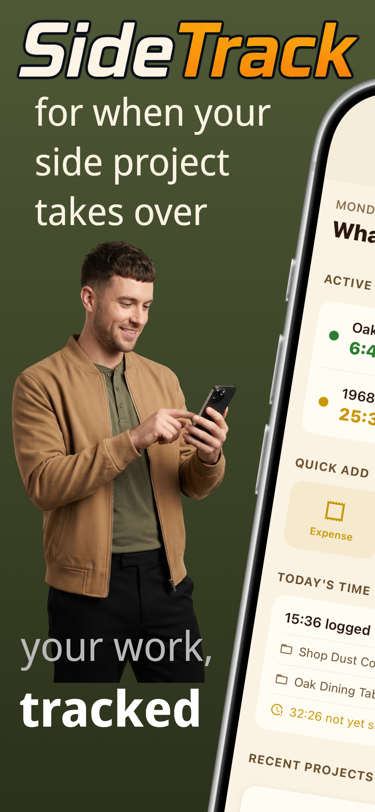
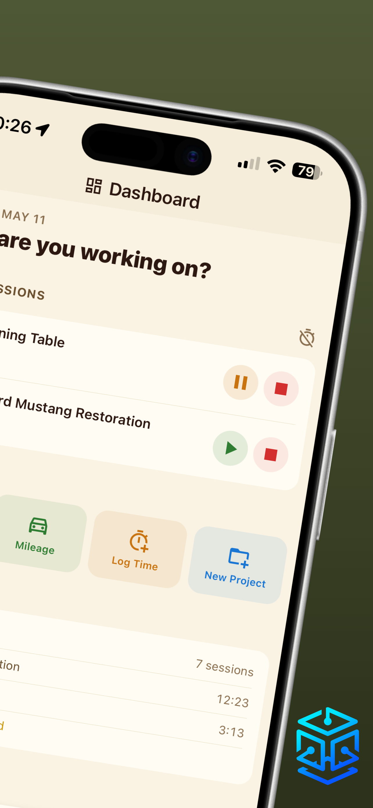
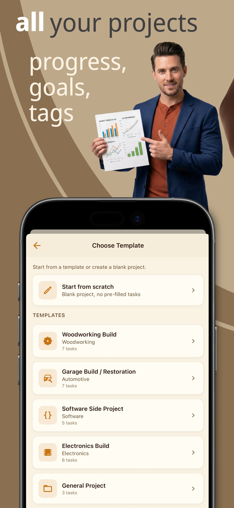
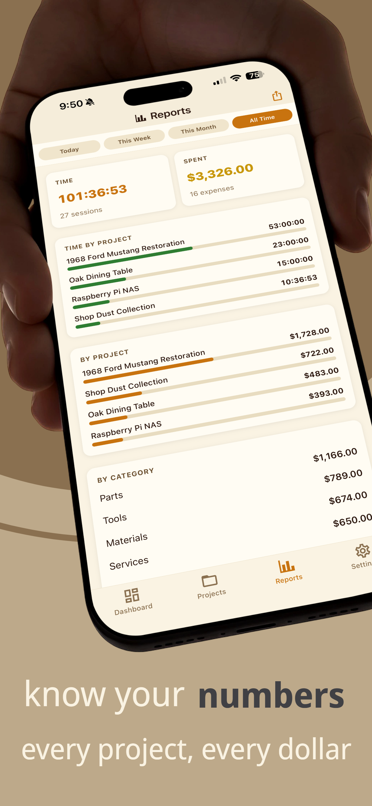
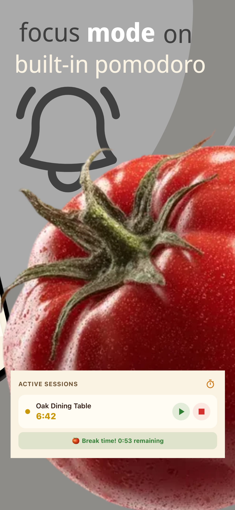
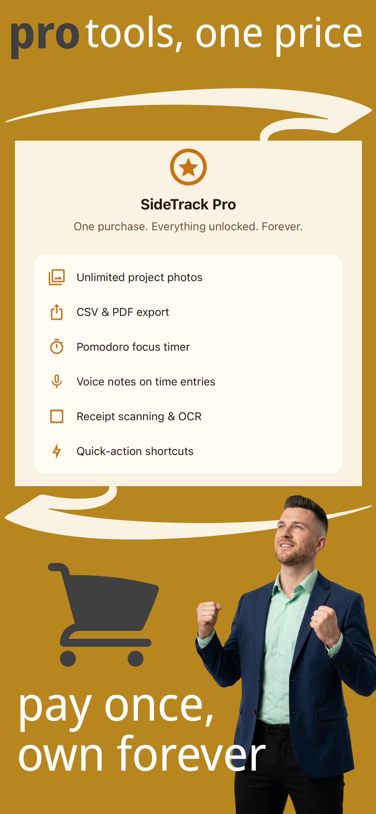

SideTrack for iOS
For when your side project
takes over.
Track your time, expenses, and progress — without the overhead. No account required.






Built for makers and tinkerers
SideTrack helps you understand the real cost of your side projects — time and money. Log hours with a real-time timer, track every expense, and document progress with photos. All your data stays on your device. No subscriptions, no accounts, no nonsense.
What's inside
Everything you need, nothing you don't.
No account required
All your data lives on your device. Nothing goes to our servers — ever. Optional iCloud sync (Pro) keeps your devices in step via your own Apple account.
Real-time timer
Start a timer for any project or sub-task with one tap. Timers survive app backgrounding. Log manual time entries for past work. Pomodoro focus timer with configurable intervals (Pro).
Expense tracking
Log parts, tools, materials, and services against any project. Track mileage at a configurable rate, set up recurring expenses, and photograph receipts. Receipt OCR auto-fills the form (Pro).
Photo journal
Document your project before, during, and after with captioned photos. A visual record of your work — always attached to the project, never lost in your camera roll.
Insights & reports
See where your time and money actually went. Hourly cost analysis shows the true effective rate of your work. Export to CSV or PDF. Today, week, month, and all-time views.
SideTrack Pro
One-time purchase. Unlocks iCloud sync, voice notes on time entries, unlimited photos, Pomodoro timer, receipt OCR, billable hourly rates, and removes ads. No subscription, no recurring charges.
Ready to track your hustle?
Free to download. Available on the App Store for iPhone.